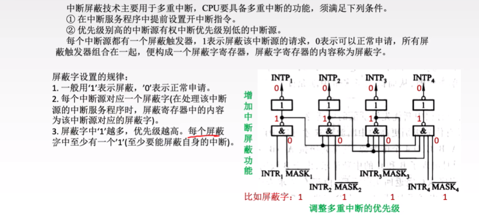
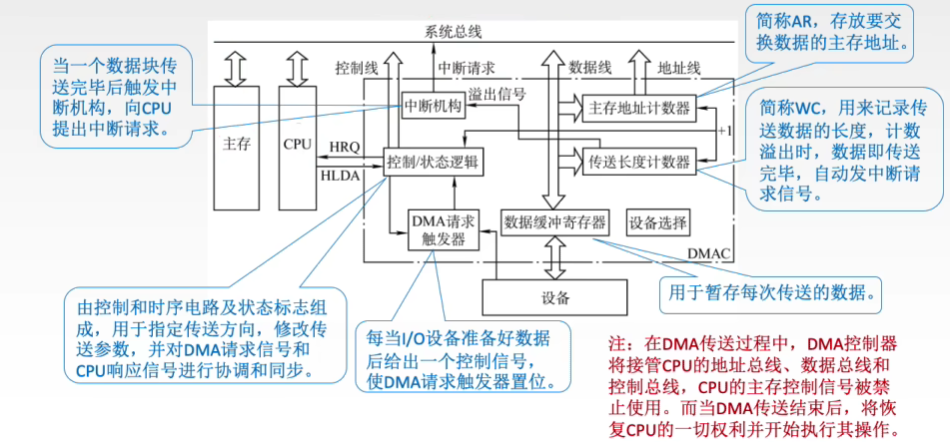

I/O 系统基本概念 *
-
输入/输出系统
输入/输出是以主机为中心而言的，将信息从外部设备传送到主机称为输入，反之称为输出。
输入/输出系统解决的主要问题是对各种形式的信息进行输入和输出的控制。
-
I/O 控制方式
- 程序查询方式：由 CPU 通过程序不断查询 I/O 设备是否已做好准备，从而控制 I/O 设备与主机交换信息。
- 程序中断方式：只在 I/O 设备准备就绪并向 CPU 发出中断请求时才予以响应。
- DMA 方式：主存和 I/O 设备之间有一条直接数据通路，当主存和 I/O 设备交换信息时，无须调用中断服务程序
- 通道方式：在系统中设有通道控制部件，每个通道都挂接若干外设，主机在执行 I/O 命令时，只需启动有关通道，通道将执行通道程序，从而完成 I/O 操作。
-
外部设备
- 输入设备
- 输出设备
- 外部存储器（辅存）
I/O 接口
I/O 接口：也称I/O 控制器、设备控制器，是主机和外设之间的交接界面，可以通过接收主机发送的 I/O 控制信号实现主机和外设之间的信息交换。
打印机适配器、网络控制器、可编程中断控制器等属于 I/O 接口。
功能
I/O 接口的主要功能如下：
-
进行地址译码和设备选择：CPU 送来选择外设的地址码后，接口必须对地址进行译码以产生设备选择信息，使主机能和指定外设交换信息。
-
实现主机和外设的通信联络控制：解决主机与外设时序配合问题，协调不同工作速度的外设和主机之间交换信息，以保证整个计算机系统能统一、协调地工作。
-
实现数据缓冲：CPU 与外设之间的速度往往不匹配，为消除速度差异，接口必须设置数据缓冲寄存器，用于数据的暂存，以避免因速度不一致而丢失数据。
-
信号格式的转换：外设与主机两者的电平、数据格式都可能存在差异，接口应提供主机与外设的信号格式的转换功能，如电平转换、并/串或串/并转换、模/数或数/模转换等。
-
传送控制命令和状态信息：CPU 要启动某外设时，通过接口中的命令寄存器向外设发出启动命令；外设准备就绪时，则将“准备好”状态信息送回接口中的状态寄存器，并反馈给 CPU。外设向 CPU 提出中断请求时，CPU 也应有相应的响应信号反馈给外设。
基本结构
- 数据缓冲寄存器：用来暂存与 CPU 或内存之间传送的数据信息;
- 状态寄存器：用来记录接口和设备的状态信息;
- 控制寄存器：用来保存 CPU 对外设的控制信息;
- 数据线：传送读/写数据、状态信息、控制信息和中断类型号。
- 地址线：传送要访问 I/O 接口中的寄存器的地址。
- 控制线：传送读/写控制信号，以确认是读寄存器还是写寄存器，此外控制线还会传送中断请求和响应信号、仲裁信号和握手信号。
Tip
状态寄存器和控制寄存器传送方向相反，访问时间错开，因此可将它们合二为一。换句话说，状态端口和控制端口可以共用同一个寄存器。
I/O 接口中的I/O 控制逻辑的任务：
- 对控制寄存器中的命令字进行译码，并将译码得到的控制信号通过外设界面控制逻辑送到外设；
- 将数据缓冲寄存器的数据发送到外设或从外设接收数据到数据缓冲寄存器；
- 收集外设状态到状态寄存器；
对数据缓冲寄存器、状态/控制寄存器的访问操作是通过相应的指令来完成的，通常称这类指令为 I/O 指令，I/O 指令只能在操作系统内核的底层 I/O 软件中使用，它们是一种特权指令。
Tip
主机和外设之间的连接通路是：CPU 和主存——I/O 总线——I/O 接口——通信总线（电缆）——I/O 接口——外设。
工作原理
Tip
对打印机的中断控制过程通常是：
CPU 先将需要打印的字符编码送到打印控制接口（也称打印适配器）中，打印控制接口再将字符编码转换为点阵信息，然后通过电缆传送到打印机，以控制打印针头在何处进行打印。
同时，打印控制接口需要将“初始化”“选通”“自动走纸”等控制信息通过电缆传送到打印机，并通过电缆把打印机的“联机”“忙”“缺纸”等状态信号取到打印控制接口，以供 CPU 读取。
中断请求信号是打印控制接口通过中断控制器发送给 CPU 的，因此不在打印控制接口和打印机之间进行交换。
I/O 端口编址
I/O 端口是指 I/O 接口电路中可被 CPU 直接访问的寄存器，主要有数据端口、状态端口和控制端口。
通常，CPU 能够对数据端口中的数据进行读/写操作；但对状态端口中的外设状态只能进行读操作，对控制端口中的各种控制命令只能进行写操作。I/O 端口要想能够被 CPU 访问，就必须要对各个端口进行编址，每个端口对应一个端口地址。
编址方式：
-
独立编址
独立编址也称 I/O 映射方式，是指对所有的 I/O 端口单独进行编址。
I/O 端口的地址空间与主存地址空间是两个独立的地址空间，它们的范围可以重叠，相同地址可能属于不同的地址空间。因此需设置专门的 I/O 指令来表明访问的是 I/O 地址空间，I/O 指令的地址码给出 I/O 端口号。
优点：I/O 端口数比主存单元数少得多，只需少量地址线，使得 I/O 端口译码简单，寻址速度更快。使用专用 I/O 指令，可使得程序更加清晰，便于理解和检查。
缺点：I/O 指令少，只提供简单的传输操作，所以程序设计的灵活性较差。CPU 需要提供存储器读/写、I/O 设备读/写两组控制信号，增大了控制的复杂性。
Tip
I/O 指令是指令系统的一部分，是机器指令的一类，但其为了反映与 I/O 设备交互的特点，格式和其他通用指令相比有所不同。
-
统一编址
统一编址也称存储器映射方式，是指把主存地址空间分出一部分给 I/O 端口进行编址，I/O 端口和主存单元在同一地址空间的不同分段中，根据地址范围就能区分访问的是 I/O 端口还是主存单元，因此无须设置专门的 I/O 指令，用统一的访存指令就可访问 I/O 端口，并靠指令不同的地址码区分不同的 I/O 设备和存储单元。
优点：不需要专门的 IO 指令，使得 CPU访问 I/O 的操作更加灵活和方便，还使端口有较大的编址空间。I/O 访问的保护机制可由虚拟存储管理系统来实现，无须专门设置。
缺点：端口地址占用了部分主存地址空间，使主存可用容量变小。由于在识别 I/O 端口时全部地址线都需要参加译码，使得译码电路变得更复杂，降低了译码速度。
I/O 接口类型
从不同的角度看，I/O 接口可以分为不同的类型。
- 按数据传送方式，可分为并行接口（一字节或一个字的所有位同时传送）和串行接口（一位一位地有序传送），接口要完成数据格式的转换。
- 按主机访问 I/O 设备的控制方式，可分为程序查询接口、中断接口和DMA 接口等。
- 按功能选择的灵活性，可分为可编程接口（通过编程改变接口功能）和不可编程接口。
I/O 方式
输入/输出系统实现主机与 I/O 设备之间的数据传送，可以采用不同的控制方式，各种方式在代价、性能、解决问题的着重点等方面各不相同，常用的 I/O 方式有程序查询、程序中断和 DMA 等。
程序查询方式
信息交换的控制直接由 CPU 执行程序实现。程序查询方式接口中设置一个数据缓冲寄存器（数据端口）和一个设备状态寄存器（状态端口）。
主机进行 IO 操作时，先读取设备的状态并根据设备状态决定下一步操作究竞是进行数据传送还是等待。
在程序查询方式中，CPU 与外设串行工作，传送与主程序串行工作。
程序查询方式可分为如下两类：
- 独占查询：一旦设备被启动，CPU 就一直持续查询接口状态，CPU 花费 100%的时间用于 I/O 操作，此时外设和 CPU 完全串行工作。
- 定时查询：CPU 周期性地查询接口状态，每次总是等到条件满足才进行一个数据的传送，传送完成后返回到用户程序。定时查询的时间间隔与设备的数据传输速率有关。
程序中断方式
程序中断基本概念
程序中断是指在计算机执行程序的过程中，出现某些急需处理的异常情况或特殊请求，CPU 暂时中止现行程序，而转去对这些异常情况或特殊请求进行处理，处理完毕后再返回到原程序的断点处，继续执行原程序。
中断技术主要功能有：
- 实现 CPU 与 I/O 设备的并行工作。
- 处理硬件故障和软件错误。
- 实现人机交互，用户干预机器需要用到中断系统。
- 实现多道程序、分时操作，多道程序的切换需借助于中断系统。
- 实时处理需要借助中断系统来实现快速响应。
- 实现应用程序和操作系统（管态程序）的切换，称为软中断。
- 多处理器系统中各处理器之间的信息交流和任务切换。
程序中断方式的思想：
CPU 在程序中安排好在某个时机启动某台外设，然后 CPU 继续执行当前的程序，不需要像查询方式那样一直等待外设准备就绪。
一旦外设完成数据传送的准备工作，就主动向 CPU 发出中断请求。在可以响应中断的条件下，CPU 暂时中止正在执行的程序，转去执行中断服务程序为外设服务，在中断服务程序中完成一次主机与外设之间的数据传送，实现 CPU 的通用寄存器和外设接口中的寄存器之间的直接数据交换。
传送完成后，CPU 返回原来的程序。此时，外设和 CPU 又开始并行工作。
Tip
通常外设准备数据的时间 > 中断处理时间。
以输入设备为例，设备为进程准备的数据会先写入设备控制器的缓冲区（缓冲区的大小是有限的），缓冲区没写满一次就向 CPU 发送一次中断请求，CPU 响应并处理中断的过程就是将缓冲区的数据“取走”的过程，因此若是若外设准备数据的时间小于中断处理时间，则可能导致外设往缓冲区写入数据的速度快于 CPU 从缓冲区中取走数据的速度，从而导致缓冲区的数据被覆盖，进而导致数据丢失。
从宏观上看，虽然程序中断方式克服了程序查询方式中 CPU 的等待现象，提高了 CPU 的利用率。
但从微观操作分析，CPU 在处理中断时，仍需暂停原程序的运行，尤其是当高速设备频紧成批地与主存交换信息时，需要不断打断 CPU 执行现行程序而去执行中断服务程序。
总的来说，在中断方式中，CPU 与外设并行工作，传送与主程序是串行工作的。
程序中断的工作流程
中断请求
中断源是请求 CPU 中断的设备或事件，一台计算机允许有多个中断源。每个中断源向 CPU 发出中断请求的时间是随机的。
为记录中断事件并区分不同的中断源，中断系统需对每个中断源设置中断请求标记触发器，当其状态为“1”时，表示该中断源有请求。这些触发器可组成中断请求标记寄存器，该寄存器可集中在 CPU 中，也可分散在各个中断源中。
通过 INTR 线发出的是可屏蔽中断，通过 NMI 线发出的是不可屏蔽中断。
可屏蔽中断的优先级最低，在关中断模式下不被响应。不可屏蔽中断用于处理紧急和重要的事件，如时钟中断、电源掉电等，其优先级最高，其次是内部异常，即使在关中断模式下也被响应。
Tip
因为 CPU 无法对发生的中断请求立即进行处理，因此需要在 I/O 接口中设置中断触发器，以保存是哪些外设发出了中断请求，等 CPU 当前的指令周期结束后，响应中断并进行处理。
中断响应过程
CPU 响应中断的条件
CPU 在满足一定的条件下响应中断源发出的中断请求，并经过一些特定的操作，转去执行中断服务程序。
CPU 响应中断必须满足以下 3 个条件：
- 中断源有中断请求。
- CPU 允许中断及开中断（异常和不可屏蔽中断不受此限制）。
- 一条指令执行完毕（异常不受此限制），且没有更紧迫的任务。
I/O 设备的就绪时间是随机的，而 CPU 在统一的时刻即每条指令执行结束时，采样中断请求信号（开中断的情况下），以获取 I/O 的中断请求，也就是说，CPU 响应中断的时间是在每条指令执行阶段的结束时刻。
因此在每条指令执行结束时（而不是执行过程中），CPU 统一扫描各个中断源，检查有无中断请求。
Warning
这里说的中断仅指 I/O 中断，异常不属于此类情况。异常是在指令执行过程中检测的。
中断响应判优
由于许多中断源提出中断请求的时间都是随机的，因此当多个中断源同时提出请求时，需通过中断判优逻辑来确定响应哪个中断源的请求，中断响应的判优通常是通过硬件排队器（或中断查询程序）实现的。
- 一般来说，不可屏蔽中断 > 内部异常 > 可屏蔽中断；
- 在内部异常中，硬件故障 > 软件中断；DMA 中断请求 > I/O 设备的中断请求；
- 在 IO 传送类中断请求中，高速设备 > 低速设备；输入设备 > 输出设备；实时设备 > 普通设备。
中断优先级包括
-
响应优先级：CPU 响应中断请求的先后顺序，由硬件线路或查询程序的查询顺序决定，不可动态改变。它反映的是多个中断同时请求时哪个先被响应，即中断服务程序开始执行的顺序。
-
处理优先级：多重中断的实际优先级处理次序，可以利用中断屏蔽技术动态调整，从而可以灵活地调整中断服务程序的优先级，使中断处理更加灵活。在多重中断系统中，中断处理优先级决定了本中断是否能打断正在执行的中断服务程序，决定了多个中断服务程序执行完的次序。
若不使用中断屏蔽技术，则处理优先级和响应优先级相同。
现代计算机一般使用中断屏蔽技术，每个中断源都有一个屏蔽触发器(MASK)，1 表示屏蔽该中断源的请求，0 表示可以正常请求，所有屏蔽触发器组合在一起便构成一个屏蔽字寄存器，屏蔽字寄存器的内容称为屏蔽字。

图中所指的优先级是处理优先级而不是响应优先级。
中断响应处理过程
CPU 响应中断后，经过某些操作，转去执行中断服务程序。
这些操作是由硬件直接实现的，我们将它称为中断隐指令。中断隐指令并不是指令系统中的一条真正的指令，只是一种虚拟的说法，本质上是硬件的一系列自动操作。
它所完成的操作如下：
-
关中断：CPU 响应中断后，首先要保护程序的断点和现场信息，在保护断点和现场的过程中，CPU 不能响应更高级中断源的中断请求。否则，若断点或现场保存不完整，在中断服务程序结束后，就不能正确地恢复并继续执行现行程序。
-
保存断点：为保证在中断服务程序执行完后能正确地返回到原来的程序，必须将原程序的断点（指令无法直接读取的PC和PSW的内容）保存在栈或特定寄存器中。
Tip
异常指令通常并没有执行成功，异常处理后要重新执行，所以异常断点通常是当前指令的地址，中断的断点则是下一条指令的地址。
-
引出中断服务程序：识别中断源，将对应的服务程序入口地址送入程序计数器 PC。有两种方法识别中断源：硬件向量法、软件查询法。
Tip
在中断响应周期中，采用硬件方法保护并更新 PC 内容，而不由软件完成，这样可以避免因为软件保存和恢复 PC 内容而造成的时间开销和错误风险，提高中断处理的效率和正确性。
中断向量
中断识别分为向量中断和非向量中断两种。
每个中断源都有一个唯一的类型号，每个中断类型号都对应一个中断服务程序，每个中断服务程序都有一个入口地址，即中断向量，CPU 必须找到入口地址。
Note
把系统中的全部中断向量集中存放到存储器的某个区域内，这个存放中断向量的存储区就称为中断向量表，中断向量表由操作系统初始化。
Note
中断服务程序是处理器处理的紧急事件，可理解为一种服务，是事先编好的某些特定的程序，一般属于操作系统的模块，以供调用执行。
CPU 响应中断后，通过识别中断源获得中断类型号，然后据此计算出对应中断向量的地址；再根据该地址从中断向量表中取出中断服务程序的入口地址，并送入程序计数器 PC，以转去执行中断服务程序，这种方法被称为中断向量法，采用中断向量法的中断被称为向量中断。
中断向量由硬件产生，并且不同的中断源对应不同的中断服务程序，因此通过该方法，可以较快速地识别中断源。
中断请求和响应信号是在 I/O 总线的控制线上传送的。CPU 响应某一中断后，就从数据线上获取该中断源的中断类型号，并据此计算对应中断向量在中断向量表中的位置。
中断完整处理过程
程序中断过程是由硬件（称中断隐指令）和中断服务程序共同完成的。
中断处理流程如下：
-
关中断
-
保存断点：保存 PC 和 PCW 寄存器
-
中断服务程序寻址
-
保存现场和屏蔽字：进入中断服务程序后首先要保存现场和中断屏蔽字，现场信息是指用户可见的工作寄存器（通常就是通用寄存器）的内容，它存放程序执行到断点处的现行值。
-
开中断：允许更高级中断请求得到响应，以实现中断嵌套。
-
执行中断服务程序：这是中断请求的目的。
-
关中断：保证在恢复现场和屏蔽字时不被中断。
-
恢复现场和屏蔽：将现场和屏蔽字恢复到原来的状态。
-
开中断、中断返回：中断服务程序的最后一条指令通常是一条中断返回指令，使其返回到原程序的断点处，以便继续执行原程序。但与无条件转移指令不同的是，它不仅要修改 PC 值，而且要将 CPU 中的所有寄存器都恢复到中断前的状态。
其中，1 ～ 3 由中断隐指令（硬件自动）完成；4 ～ 9 由中断服务程序完成。
Tip
现场和断点，这两类信息都不能被中断服务程序破坏。
- 由于现场信息用指令可直接访问，因此通常在中断服务程序中通过指令把它们保存到栈中，即由软件实现。换句话说，在 CPU 响应中断的时候，通用寄存器的内容由中断服务程序保存。
- 断点信息由 CPU 在中断响应时自动保存到栈或指定的寄存器中，即由硬件实现。
Tip
若是单重中断（或称单级中断），则在上述流程中去掉 5 和 7 即可。
Tip
允许中断触发器置 0 表示关中断，在中断响应周期由硬件自动完成，即中断隐指令完成。
虽然关中断指令也能实现关中断的功能，但在中断响应周期，关中断是由中断隐指令完成的。在恢复现场和屏蔽字的时候则由关中断指令来完成的。
多重中断
在 CPU 执行中断服务程序的过程中，若又出现了新的优先级更高的中断请求，而 CPU 对新的中断请求不予响应，则称这种中断为单重中断。
若 CPU 暂停现行的中断服务程序，转去处理新的中断请求，则称这种中断为多重中断，也称中断嵌套。
CPU 要具备多重中断的功能，必须满足下列条件：
- 在中断服务程序中提前设置开中断指令。
- 优先级别高的中断源有权中断优先级别低的中断源。
DMA 方式
DMA(Direct Memory Access) 方式是一种完全由硬件进行成组信息传送的控制方式，它具有程序中断方式的优点，即在数据准备阶段，CPU 与外设并行工作。
DMA 方式在外设与内存之间开辟了一条“直接数据通路”，信息传送不再经过 CPU，降低了 CPU 在传送数据时的开销，因此称为直接存储器存取方式。
由于数据传送不经过 CPU，因此不需要保护、恢复 CPU 现场等操作。这种方式适用于磁盘、显卡、声卡、网卡等高速设备大批量数据的传送，它的硬件开销比较大。
在 DMA 方式中，中断的作用仅限于故障和正常传送结束时的处理。
特点
主存和 DMA 接口之间有一条直接数据通路。由于 DMA 方式传送数据不需要经过 CPU，因此不必中断现行程序，I/O 与主机并行工作，程序和传送并行工作。
DMA 方式具有下列特点：
- 它使主存与 CPU 的固定联系脱钩，主存既可被 CPU 访问，又可被外设访问。
- 在数据块传送时，主存地址的确定、传送数据的计数等都由硬件电路直接实现。
- 主存中要开辟专用缓冲区，以及时提供和接收外设的数据。
- DMA 传送速度快，CPU 和外设并行工作，提高了系统效率。
- DMA 在传送开始前要通过程序进行预处理，结束后要通过中断方式进行后处理。
Tip
只有具有 DMA 接口的设备才能产生 DMA 请求，即使当前设备是高速设备或需要与主机批量交换数据，若没有 DMA 接口的话，也不能产生 DMA 请求。
DMA 控制器的组成
在 DMA 方式中，对数据传送过程进行控制的硬件称为 DMA 控制器（DMA 接口）。
当 I/O 设备需要进行数据传送时，通过 DMA 控制器向 CPU 提出 DMA 传送请求，CPU 响应之后将让出系统总线，由 DMA 控制器接管总线进行数据传送。
主要功能如下：
- 接受外设发出的 DMA 请求，并向 CPU 发出总线请求。
- CPU 响应并发出总线响应信号，DMA 接管总线控制权，进入 DMA 操作周期。
- 确定传送数据的主存起始地址及长度，并自动修改主存地址计数和传送长度计数。
- 规定数据在主存和外设间的传送方向，发出读/写等控制信号，执行数据传送操作。
- 向 CPU 报告 DMA 操作结束。

在 DMA 传送过程中，DMA 控制器接管系统总线。而当 DMA 传送结束后，将恢复 CPU 的切权利并开始执行其操作。由此可见，DMA 控制器必须具有控制系统总线的能力。
Tip
DMA 控制器不仅能为高速设备服务，也能同时为多个慢速外设服务，例如多路型 DMA 控制器。
DMA 传送过程
-
预处理
由 CPU 完成一些必要的准备工作。
首先，初始化 DMA 控制器中的有关寄存器、设置传送方向、测试并启动设备等。然后，CPU 继续执行原程序，直到 I/O 设备准备好发送的数据（输入情况）或接收的数据（输出情况）时，I/O 设备向 DMA 控制器发送 DMA 请求，再由 DMA 控制器向 CPU 发出总线请求（这两个过程也可统称 DMA 请求），用以传输数据。即 DMA 请求：I/O 设备 → DMA 控制器 → CPU
Tip
每个机器周期结束后或总线空闲，CPU 就可以响应 DMA 请求。
Note
DMA 传送前是由设备驱动程序设置传送参数。每类设备都配置一个设备驱动程序，设备驱动程序向上层用户程序提供一组标准接口，负责实现对设备发出各种具体操作指令，用户程序不能直接和 DMA 打交道。
-
数据传送
DMA 以数据块为基本传送单位。
DMA 占用总线后的数据输入/输出操作都是通过循环来实现的，这一循环也是由 DMA 控制器实现的，即数据传送阶段完全由 DMA（硬件）控制。
-
后处理
DMA 控制器向 CPU 发送中断请求，CPU 执行中断服务程序做 DMA 结束处理，包括校验数据（出错则转诊断程序）等后处理工作。
在 DMA 方式下，整个数据块的传送过程都不需要 CPU 参与，CPU 只在最初的 DMA 控制器初始化和最后的 DMA 结束处理时才介入，因此 CPU 用于 I/O 的开销非常小。
Tip
DMA 方式只是在后处理阶段需要用中断方式请求 CPU 做结束处理，但在整个数据传送过程，并不需要中断请求。
DMA 传送方式
主存和 I/O 设备之间交换信息时，不通过 CPU。但当 I/O 设备和 CPU 同时访问主存时，可能发生冲突，为了有效地使用主存，DMA 与 CPU 通常采用以下 3 种方式使用主存。
停止 CPU 访存
当 I/O 设备有 DMA 请求时，由 DMA 接口向 CPU 发送一个停止信号，使 CPU 放弃总线控制权，停止访问主存，直到 DMA 传送一块数据结束。
数据传送结束后，DMA 接口通知 CPU 可以使用主存，并把总线控制权交回给 CPU。
优点：控制简单，适用于数据传输速率很高的 I/O 设备实现成组数据的传送。
缺点：DMA 在访问主存时，CPU 基本上处于不工作状态。
DMA 与 CPU 交替访存
将 CPU 的工作周期分成两个时间片，一个给 CPU 访存，另一个给 DMA 访存，这样在每个 CPU 周期内，CPU 和 DMA 就都可以轮流访存。
这种方式适用于 CPU 的工作周期比主存存取周期长的情况。例如，若 CPU 的工作周期是 1.2us，主存的存取周期小于 0.6us，则可将一个 CPU 周期分为 C 和 C 两个周期，其中 C 专供 DMA 访存，C2 专供 CPU 访存。
这种方式不需要申请、建立和归还总线使用权，总线使用权是通过 C 和 C 分时控制的。
优点：不需要总线控制权的申请、建立和归还过程，具有很高的传送速率。
缺点：相应的硬件逻辑变得更复杂。
周期挪用
由于 I/O 访存的优先级高于 CPU 访存（I/O 不立即访存就可能丢失数据），因此由 I/O 设备挪用一个存取周期，传送完一个数据字后立即释放总线。
CPU 对 DMA 的响应可在指令执行过程中的任何两个存取周期之间。
它是一种单字传送方式。
当 I/O 设备有 DMA 请求时，会遇到 3 种情况：
- 此时 CPU 不在访存，因此 I/O 的访存请求与 CPU 未发生冲突；
- CPU 正在访存，此时必须待存取周期结束后，CPU 再将总线占有权让出；
- I/O 和 CPU 同时请求访存，出现访存冲突，此时 CPU 要暂时放弃总线占有权。
优点：既实现了 I/O 传送，又较好地发挥了主存与 CPU 的效率。
缺点：每挪用一个主存周期，DMA 接口都要申请、建立和归还总线控制权。